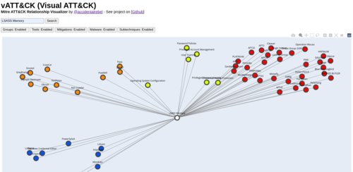

New Tool Preview: vATT&CK
I have released a new cybersecurity-related tool called vATT&CK (Visual ATT&CK). It is a relationship visualizer for the Mitre ATT&CK framework.

What the tool does is that it makes a visual map of the searched technique and all the related information. You can watch a video of the tool in action here.
Each node will be colored depending on it's category. The color legends is as follows:
- Pink - Related subtechniques
- Orange - Malware that uses the searched technique
- Red - Groups that uses the searched technique
- Blue - Tools that use the searched technique
- Yellow - Mitigations
This tool is still in development. I plan to add a number of improvements such as:
- Ability to click on nodes and then update the visual map
- Ability to search not just by technique, but also by other categories
I also plan on releasing a live demo of the tool very soon in the …
Hunt the Kingdom CTF Challenge
TLDR: Participated in a blue team CTF, had a lot of fun, looking forward for more
Yesterday I participated in the GuideM "Hunt the Kingdom" CTF challenge. It served as the final activity at the end of the "Cyber Defense and Threat Hunting" course.
I was looking forward to this CTF, especially after my awesome experience with the Red Team Village CTF at Defcon. This one is centered on the Blue Team side, and I was curious as to how it will play out.
The Preparation
I took one whole day to study and prepare. I went through all our slides and have written down the important concepts and commands to an org file. This is important because I wanted them to be easily searchable, which helped a lot during the challenge.
I also did research about the Hunt the Kingdom challenge itself. There weren't much information online about it …
Study notes: MAC Spoofing
Study notes are my personal research notes on certain topics that interests me.
Any network capable device has a unique factory-assigned Media Access Control (MAC) address. Users have no way to change the MAC address but it can be done. However, it is possible to mask the MAC address and have it show a different value. This is called MAC spoofing.
There are legitimate uses for MAC spoofing. For example, there may be certain applications that require a particular MAC address to work, or maybe your ISP expects a certain MAC address to connect to the network. MAC spoofing is largely used for illegitimate uses, like circumventing an access control list or getting past a filter on a wireless network.
Changing MAC Address via ifconfig
In Linux we could use ifconfig to change the MAC address.
To view the current MAC address:
$ ifconfig
The current MAC address is 08:00 …